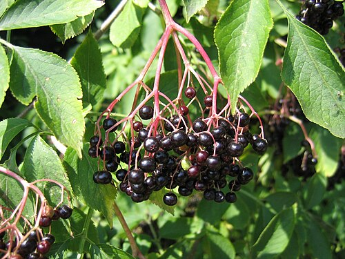
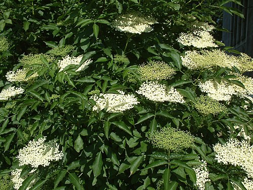

Czarny bez
Sambucus nigra · rodzina piżmaczkowate (Adoxaceae) · „dziki bez"



Występowanie
Cała Polska, lasy, miedze
Wysokość
2–7 m (krzew/drzewo)
Kwitnienie
V – VI
Dojrzewanie owoców
VIII – IX
Zbiór kwiatów
V – VI (pełnia kwitnienia)
Zbiór owoców
VIII – IX (pełna dojrzałość)
Opis i występowanie
Krzew lub niewielkie drzewko (do 7 m). Liście nieparzyście pierzaste (5-7 listków), o nieprzyjemnym zapachu po roztarciu. Pędy ze szpikiem w środku (białym, gąbczastym) — łatwo rozpoznać.
Kwiatostan = duża kremowobiała baldachogrono (do 20 cm średnicy) o słodkawym, intensywnym zapachu. Owoce = małe, czarne, błyszczące jagody zebrane w ciężkie, opadające pęczki.
Rośnie na obrzeżach lasów, w zaroślach, przy płotach, na ruinach, na podwórkach wsi. Lubi gleby żyzne, wilgotne, bogate w azot.
⚠ UWAGA — TRUJĄCA NA SUROWO! Surowe owoce, liście, kora i niedojrzałe jagody zawierają sambunigrynę (cyjanowodorowy glikozyd) — powoduje wymioty, biegunkę, bóle głowy. Tylko całkowicie dojrzałe, czarne owoce po obróbce termicznej (gotowanie, suszenie) są bezpieczne!
⚠ Uwaga na podobne gatunki!
- Bz koralowy (Sambucus racemosa) — krzew, owoce czerwone zebrane w piramidalne, wznoszone grona (nie zwisające baldachy). Liście o silnie nieprzyjemnym zapachu. Mniej leczniczy, rzadziej stosowany. Owoce surowe drażnią żołądek, po ugotowaniu jadalne (dżemy), ale zdecydowanie gorzej zbadany niż czarny bez.
- Bz hebd (Sambucus ebulus) — NIE krzew, lecz zielna bylina! (do 1,5 m), nie drewnieje. Baldachogrona wznoszone ku górze (nie zwisają jak u czarnego bzu). Owoce czarne jak u czarnego bzu — tu leży pułapka! Ale wyrastają w baldachach skierowanych ku górze i cały krzew intensywnie, przykro śmierdzi. Silnie trujący — powoduje wymioty, biegunki, może wywołać drgawki. Nie zbierać!
Jak rozróżnić czarny bez? Ma zwisające, opadające pęczki dojrzałych owoców, kwitnie na kremowobiałe poziome baldachogrony (V-VI), łodygi z białym szpikiem w środku, liście bez silnego zapachu.
Skład
| Część | Składniki |
|---|---|
| Kwiaty | Olejek eteryczny, flawonoidy (rutyna, kwercetyna), garbniki, kwasy organiczne, sambunigryna (w małej ilości) |
| Owoce dojrzałe | Antocyjany (silne antyoksydanty!), witamina C, A, B, kwas foliowy, żelazo, potas, cukry, pektyny |
| Liście, kora, niedojrzałe owoce | Sambunigryna (TRUJĄCE!) — nie używać |
Na co pomaga
Kwiaty
- Przeziębienie, grypa — silnie napotne, działają objawowo (klasyk!)
- Gorączka — naturalne obniżanie
- Drogi oddechowe — kaszel, zapalenie oskrzeli, zatok
- Bóle reumatyczne — wspomagająco
Owoce
- Odporność — wspomaga, szczególnie w sezonie jesienno-zimowym
- Grypa — udowodnione działanie antywirusowe (badania nad ekstraktem Sambucol)
- Antyoksydanty — antocyjany walczą z wolnymi rodnikami
- Drogi moczowe — moczopędne
- Zaparcia — łagodne, dzięki pektynom
- Anemia — żelazo + witamina C
Zbiór i suszenie
- Kwiaty: maj-czerwiec, w słoneczne dni gdy pełne baldachogrono jest rozkwitnięte. Ścinaj całe baldachy ostrym sekatorem.
- Suszenie kwiatów: rozłóż na płask na siatkach lub powieś główkami w dół. W cieniu, max 35°C. Po wysuszeniu poodklepaj kwiatki od szypułek — szypułki mają sambunigrynę.
- Owoce: sierpień-wrzesień, gdy wszystkie w pęczku są ciemnoczarne i miękkie. Nigdy nie jedz surowych! Zerwij całe pęczki, oderwij owoce od szypułek (widelcem to szybkie).
- Przechowywanie: kwiaty w szczelnych słoikach, do 12 mies. Owoce — najlepiej od razu na sok/przetwory lub zamrozić.
Przepisy
🍵 Napar z kwiatów na przeziębienie
- Łyżkę suchych kwiatów zalej szklanką wrzątku.
- Przykryj, parzy 10-15 min.
- Pij gorący 2-3× dziennie. Z miodem i sokiem z cytryny.
- Po wypiciu połóż się pod kołdrę — silne pocenie pomaga zwalczyć infekcję.
🍯 Syrop z kwiatów czarnego bzu (klasyk!)
- 30 świeżych baldachów (tylko białe kwiaty, bez zielonych szypułek!) włóż do dużego garnka.
- Dodaj 2 cytryny pokrojone w plasterki + 50g kwasku cytrynowego.
- Zalej 2 l zimnej, przegotowanej wody. Przykryj.
- Odstaw na 2 doby w chłodne miejsce, codziennie wymieszaj.
- Przecedź przez gazę. Wymieszaj z 1,5 kg cukru, podgrzewaj aż się rozpuści (nie gotuj!).
- Przelej do butelek. Pasteryzuj 15 min lub trzymaj w lodówce.
- Łyżka do herbaty lub szklanki wody = pyszny napój.
🍷 Syrop/sok z owoców czarnego bzu
- Owoce oddziel widelcem od szypułek (szypułki = sambunigryna, nie chcesz ich!).
- Włóż do garnka z 250 ml wody, gotuj 30 min na małym ogniu (rozetrą się).
- Przeciśnij przez gazę lub sitko — wyciśnij dokładnie.
- Sok zmierz, dodaj 60-80% wagowo cukru i sok z cytryny.
- Gotuj 15-20 min do zgęstnienia. Przelej do wyparzonych słoików, pasteryzuj.
- Łyżkę dziennie zimą = silne wsparcie odporności. Można rozcieńczyć w herbacie.
🍷 Wino z kwiatów czarnego bzu
- 20 baldachów kwiatów + 2 cytryny w plasterkach + 1,5 kg cukru.
- Zalej 5 l ciepłej, przegotowanej wody. Wymieszaj, ostudź.
- Dodaj drożdże winiarskie. Fermentuj w gąsiorze 6-8 tygodni.
- Zlewaj znad osadu, leżakuj 2-3 mies. Pyszne, lekko musujące, "szampańskie".
🥞 Kwiaty bzu smażone w cieście
- Świeże baldachogrony delikatnie umyj (uważnie — łatwo opadną kwiatki), osusz.
- Przygotuj ciasto naleśnikowe (jajko + mąka + mleko + szczypta soli i cukru).
- Trzymając za łodyżkę, zanurz baldach w cieście.
- Smaż na rozgrzanym oleju 2-3 min z każdej strony do złotego koloru.
- Posyp cukrem pudrem. Serwuj z dżemem. Sezonowy przysmak!
✓ Zalety
- Syrop z owoców — silne wsparcie odporności (badania kliniczne potwierdzają)
- Kwiaty — klasyczna pomoc na przeziębienie i grypę
- Bardzo bogata roślina — kwiaty, owoce, kuchnia, soki, wina
- Owoce pełne antyoksydantów (antocyjany)
- Rośnie dziko, w dużych ilościach
- Antywirusowe działanie (potwierdzone badaniami)
✗ Wady i przeciwwskazania ⚠
- ⚠ TOKSYCZNE na surowo — owoce, liście, kora zawierają sambunigrynę
- Liście, kora, niedojrzałe owoce → ZAWSZE NIEJADALNE
- Łatwa pomyłka z bzem hebd (silnie trujący)
- Niemowlęta — niewskazany
- Ciąża, karmienie — ostrożnie, najlepiej w bardzo małych ilościach
- Może obniżać poziom cukru — uwaga przy cukrzycy
- Owoce zostawiają plamy fioletowe — uważaj na ubrania
- Może powodować nudności u wrażliwych osób
Ciekawostki
- Według tradycji nie wolno wyrąbać czarnego bzu bez ostrzeżenia — w nim mieszkała „Pani Bzowa" (słowiańska bogini). Dziś echo w przesądzie.
- W szpiku pędu (białym) dawniej robiono świszczałki i fajerki dla dzieci.
- Z kory tworzono czarny barwnik do farbowania wełny i siwych włosów.
- Sambucol (komercyjny ekstrakt) jest testowany jako lek antywirusowy — pomaga w grypie A i B (badania izraelskie).
- Kwiaty są częstym składnikiem likierów (Sambuca, St-Germain).
- Suszone kwiaty fermentuje się na kombuchę bzową — modny napój probiotyczny.